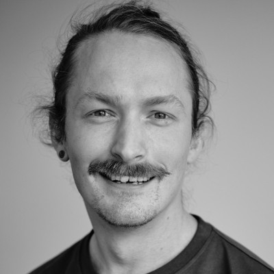

People
-
Kristoffer Laigaard Nielbo

Professor, Center Director
Center for Humanities Computing -
Kenneth Enevoldsen

Assistant Professor
Center for Humanities Computing -
Simon Aargaard Enni

Assistant Professor
Center for Humanities Computing -
Nicolas Marc Simon Legrand

Senior Researcher
Center for Humanities Computing -
Zafar Hussain

Postdoc
Center for Humanities Computing -
Yevhen Kostiuk

Postdoc
Center for Humanities Computing -
Erik Perfalk

Postdoc
Department of Clinical Medicine - PSYCOP -
Sara Kolding

PhD Student
Department of Clinical Medicine - PSYCOP -
Jakob Grøhn Damgaard

PhD Student
Department of Clinical Medicine - PSYCOP -
Frida Hæstrup

PhD Student
Department of Clinical Medicine - PSYCOP -
Anders Falkenhard Røn

PhD Student
Center for Humanities Computing -
Aleksandrs Baskakovs

Research Assistant
Center for Humanities Computing -
Sylvain Pierre Estebe

Research Assistant
Center for Humanities Computing -
Márton Kardos

IT Staff
Center for Humanities Computing -
Balázs Szabó

Student Data Scientist
Center for Humanities Computing -
Gustav Idun Sloth

Student Data Scientist
Center for Humanities Computing
Alumni
-
Sofie Mosegaard

Student Data Scientist
Center for Humanities Computing -
Laurits Wieslander Lyngbæk

Student Data Scientist
Center for Humanities Computing